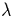

The Hartree equations were derived by considering the electronic
wavefunction as a product of many single particle wavefunctions,
 , each subject to its own external potential. Thus
, each subject to its own external potential. Thus
The Schrödinger equation for each single particle state, ,is given by
| (3) |
Hartree suggested that in a many electron system it was possible to replace V(r) with Veff(r), which included the mean electrostatic potential from all of the electrons [13]. This leads to the Hartree self-consistent equations
The total many body wavefunction is then formed as the product of these one-electron spin-orbitals. V(r) is the potential due to the ions. This simple approximation leads to surprisingly accurate results, but suffers from the lack of electronic exchange, i.e. the many body wavefunction, is not antisymmetric with respect to a switching of two of the electrons. This is in breach of the Pauli principle, which in general imposes a change of sign of the total wavefunction when two electrons are switched, and in the independent electron approximation described above, does not allow more than one electron to occupy a given state.